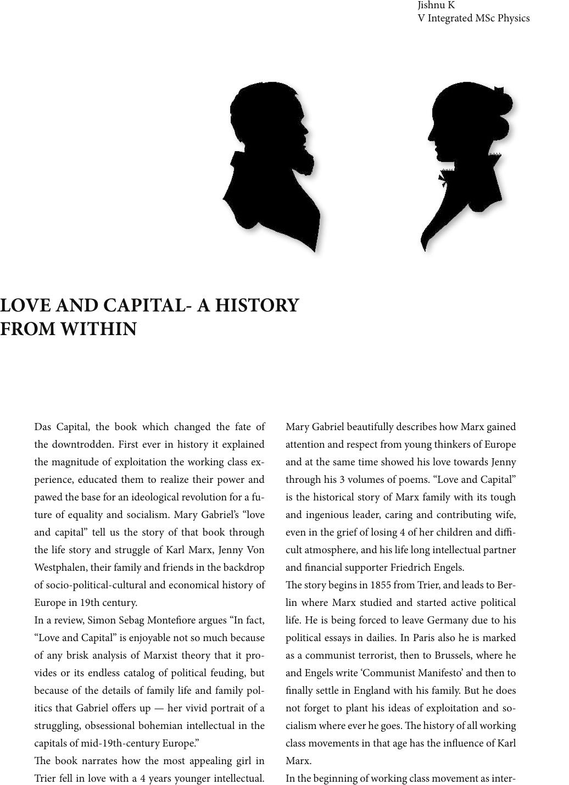

Das Capital, the book which changed the fate of
the downtrodden. First ever in history it explained
the magnitude of exploitation the working class ex-
perience, educated them to realize their power and
pawed the base for an ideological revolution for a fu-
ture of equality and socialism. Mary Gabriel’s “love
and capital” tell us the story of that book through
the life story and struggle of Karl Marx, Jenny Von
Westphalen, their family and friends in the backdrop
of socio-political-cultural and economical history of
Europe in 19th century.
In a review, Simon Sebag Monteore argues “In fact,
“Love and Capital” is enjoyable not so much because
of any brisk analysis of Marxist theory that it pro-
vides or its endless catalog of political feuding, but
because of the details of family life and family pol-
itics that Gabriel oers up — her vivid portrait of a
struggling, obsessional bohemian intellectual in the
capitals of mid-19th-century Europe.”
e book narrates how the most appealing girl in
Trier fell in love with a 4 years younger intellectual.
Mary Gabriel beautifully describes how Marx gained
attention and respect from young thinkers of Europe
and at the same time showed his love towards Jenny
through his 3 volumes of poems. “Love and Capital”
is the historical story of Marx family with its tough
and ingenious leader, caring and contributing wife,
even in the grief of losing 4 of her children and di-
cult atmosphere, and his life long intellectual partner
and nancial supporter Friedrich Engels.
e story begins in 1855 from Trier, and leads to Ber-
lin where Marx studied and started active political
life. He is being forced to leave Germany due to his
political essays in dailies. In Paris also he is marked
as a communist terrorist, then to Brussels, where he
and Engels write ‘Communist Manifesto’ and then to
nally settle in England with his family. But he does
not forget to plant his ideas of exploitation and so-
cialism where ever he goes. e history of all working
class movements in that age has the inuence of Karl
Marx.
In the beginning of working class movement as inter-
Jishnu K
V Integrated MSc Physics
LOVE AND CAPITAL- A HISTORY
FROM WITHIN